メキシコシティの空港でトランスファー。
サカテカス行きの飛行機に乗り込む。
サカテカスに着いたのは現地時間の夜の11時。
宿に着き、一息ついたら夜中の1時になっていた。
遥か昔に日本を発ってから一体、何時間寝てないんだろう？
…などと考える時間もなく、ベッドに倒れ込んだ。
そして明け方、あまりの寒さに目が覚めた。
サカテカスは
標高2200メートル。冬の朝は猛烈に寒い。
しかもいつものごとく安宿に泊まっているので、暖房なし。布団もシーツと婆ちゃんが編んだような隙間だらけのスカスカのベッドカバーのような毛布。
あまりの寒さにシャワーを浴びに行ったら
水シャワーじゃんかよ！歯がガチガチガチガチ。
仕方なくカバンの底からエマージェンシーシートを取り出し、くるまってひたすら朝を待つ。
うー、ガチガチガサガサ…。
で、朝である。
陽が出ると急激に暖かくなりる。
メキシコの高原地帯ならでは、な気候だ。
寝不足のままバスターミナルに向かう。
この日はサカテカスから郊外の
フレスニヨという街に向かう。バスで1時間ほど。
フレスニヨには大きな教会がある。
そこが本日の最初のお目当てなのだ。
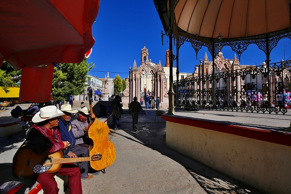
教会の名は
サントニーニョ デ アトーチャ。
幼子イエスを祭る教会だ。

教会には大勢の人が訪れている。
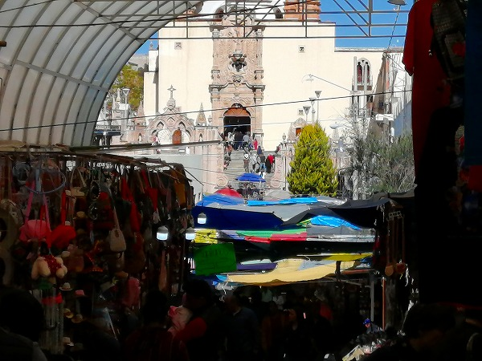
また教会へと続く道には沢山の土産物屋や宗教グッズ屋や食堂が軒を並べていた。
聖堂の中は大勢の人が押し寄せて、とても中まで入れそうにない。
遠目に祭壇をチェックしつつ外に出る。
イイんです、今回の訪問の目的はメインの聖堂ではないので。
聖堂の右脇に別の建物がある。
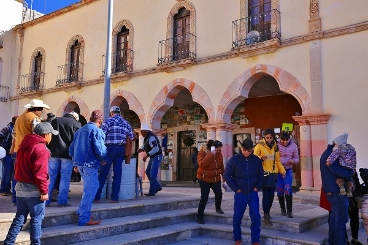
ちょっとアラビア風のアーケードの中に本日のお目当てがあるのだ。
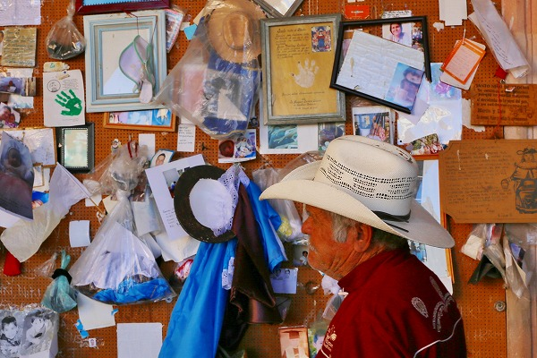
はい。こちらでございます。
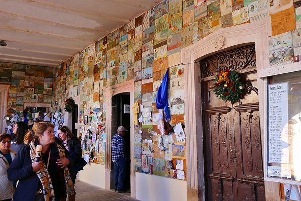
これは願いが叶った参拝者が御礼に奉納したモノだ。
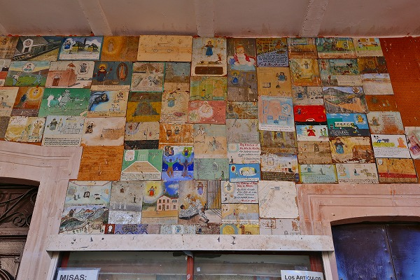
これはヨーロッパ等でも見られるもので、一般的には
エクスヴォト(EX-VOTO)と呼ばれている。
メキシコでは単に
レタブロ（絵）などと呼ばれているようだが、ここではエクスヴォトと呼ばせていただく。
エクスヴォトは主にカトリックの教会で見られる。しかし全ての教会にあるわけではない。
奇跡の起きた聖地や聖人信仰の教会、
つまり、カテドラルのような街を代表するような正統派の教会ではなく、
民間信仰的に人気のある教会に集まる傾向がある。
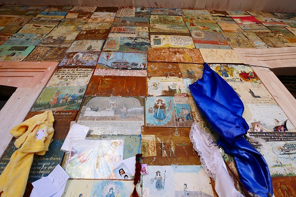
エクスヴォトはほとんどが鉄の板に描かれており、
叶った願い事を絵にして神への感謝を表現している。

中には自分の髪の毛を感謝の証として奉納するケースも少なくない。
そう言えば日本でも髪を奉納してあるのをしばしば見かけることがあるが、やはり自分の一番大事なものを捧げるというマインドは世界中で共通するのだろうか？
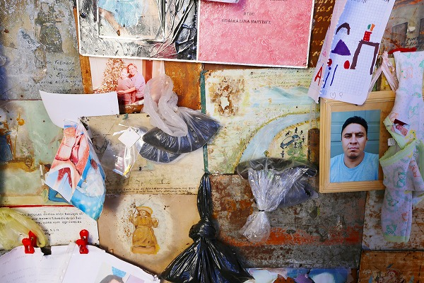
よく見ると結構ビニール袋に詰められた毛髪がある。
やはり自分の分身を捧げる、という意味なのか。
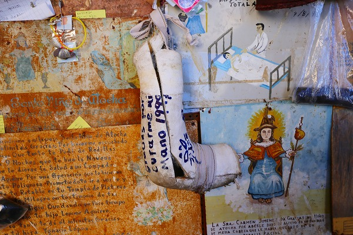
ギプスが外れて怪我が治った、という事なのだろう。
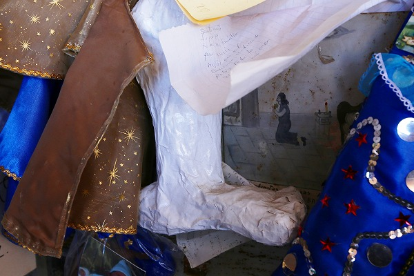
紙で作った足のハリボテ。
これも足の病が治った御礼だ。
このように日本の絵馬や奉納物に似ているが、重要なのは
願いが叶った御礼としてこれらの物は奉納されているのだ。
日本のように「〇〇が〇〇しますように」といった希望する願い事を書くのではなくて、あくまでも
願いが叶った感謝を伝えるものなのだ。
その辺が感謝と願い事が混在している日本の信仰シーンとは決定的に違うのだ。
ココ大事なのでよく覚えておいていただきたい。
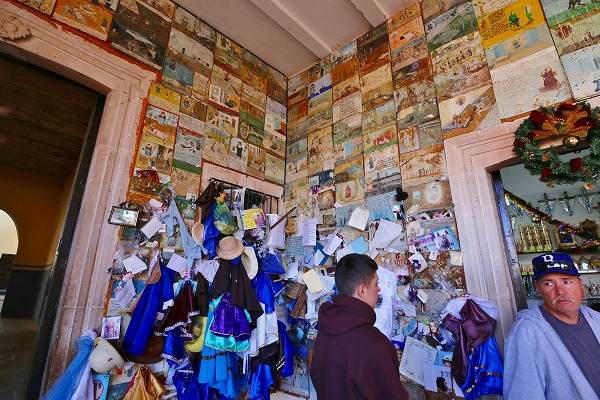
一画には服が沢山奉納されていた。
学校のマントっぽいので入学とか卒業の御礼なのかもしれない。
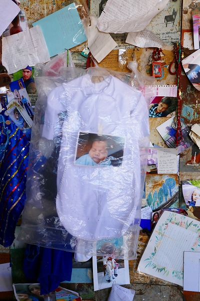
赤ん坊の写真と産着。
日本だと絶対赤ちゃんの供養にしか見えないが、
安心してください、赤ちゃんが生まれた感謝ｏｒ病気が治った御礼ですから。
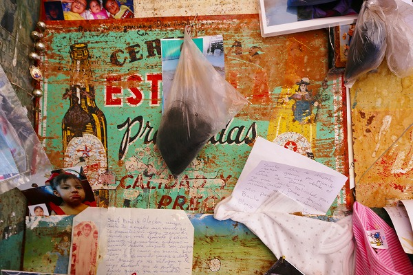
あちこちに毛髪が奉納されている。
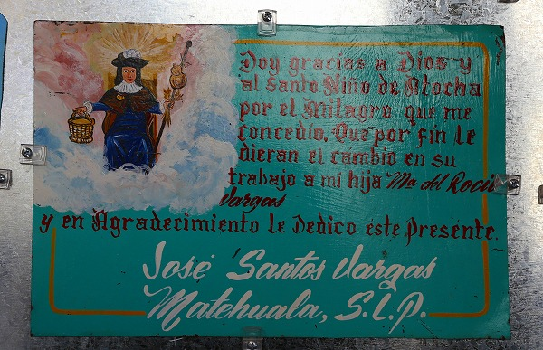
この教会はサントニーニョ（幼子イエス）を崇拝しているのでエクスヴォトにもその姿が描かれている事が多い。
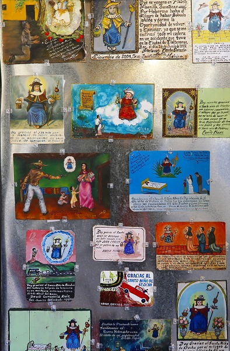
サントニーニョが沢山の災厄を救ってますよ。
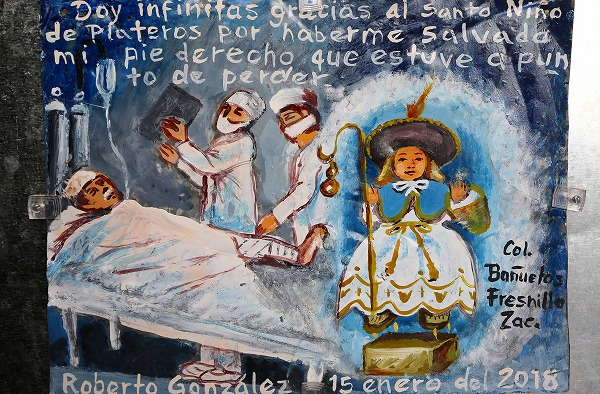
右足を失くしそうになったのにギリ助かりました。神様ありがとう！
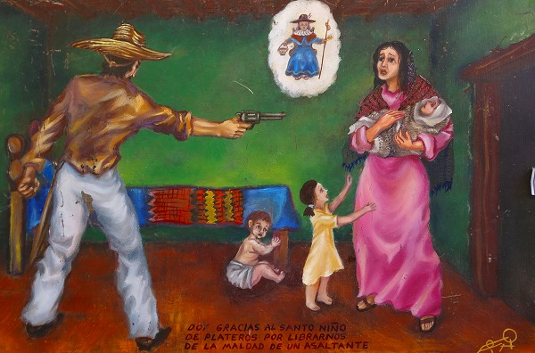
悪者から救ってくれたサントニーニョ、ありがとう！
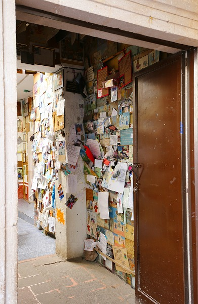
アーケードよりさらに奥にも奉納物がびっしり壁に掲げられております。
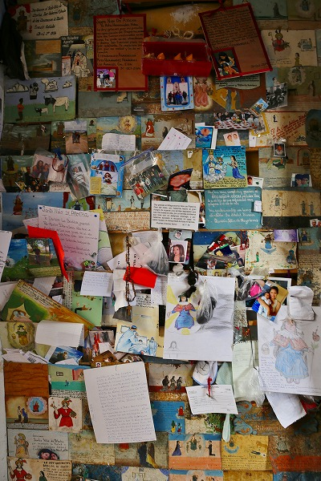
こちらは伝統的な鉄板に書かれたエクスヴォト（コレがレタブロと呼ばれる所以なのだが）だけでなく、お手紙風の紙に書かれたモノが多い。
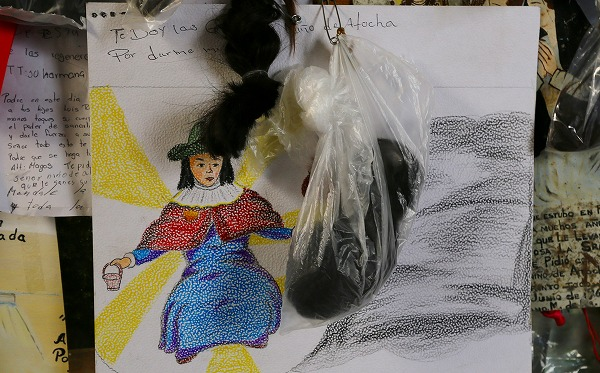
毛髪とサントニーニョ。
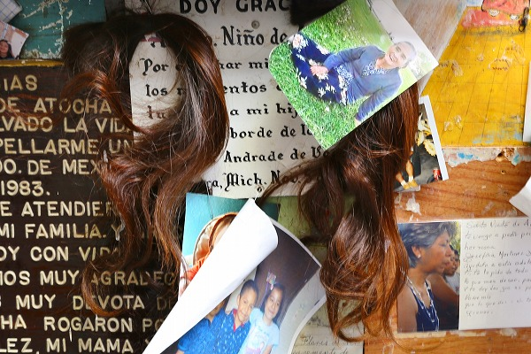
どんな願いが叶ったのだろう。
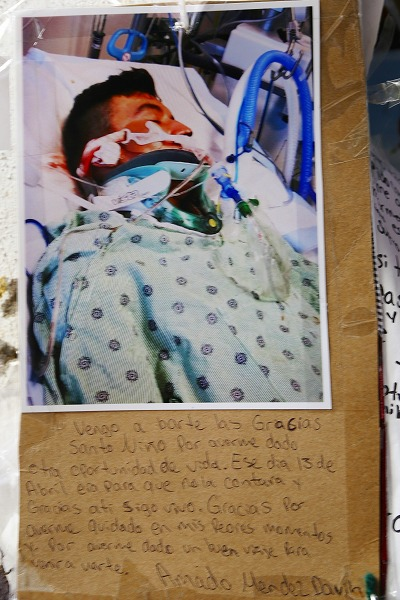
…こ、この人とか大丈夫なんでしょうか？
文面を見ると
「まだ生きてます」とあるので大丈夫なんでしょう。お大事になさってくださいませ…。
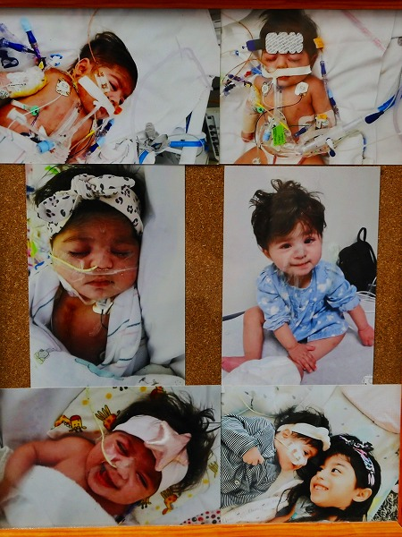
管に繋がれた赤ちゃんの痛々しすぎる写真。
でも右中央の写真を見る限り元気になったのだね。良かったよ。
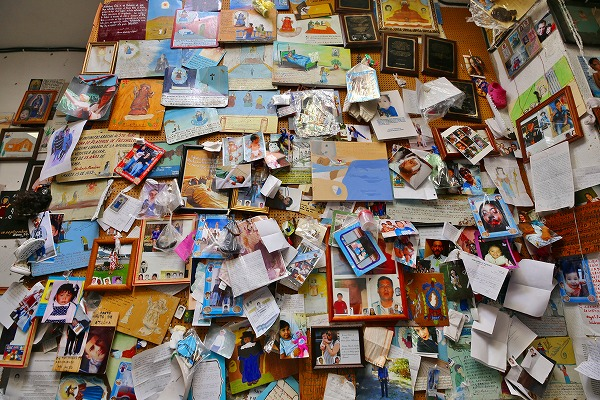
他にも
チョット大丈夫じゃないでしょう、アナタ、という写真もかなりあった。
表面的には明るいが、この国は銃、麻薬、犯罪、移民、貧困、様々な問題を抱えている。
これらの奉納物は
メキシコの世情を如実に反映しているように思えてならない。
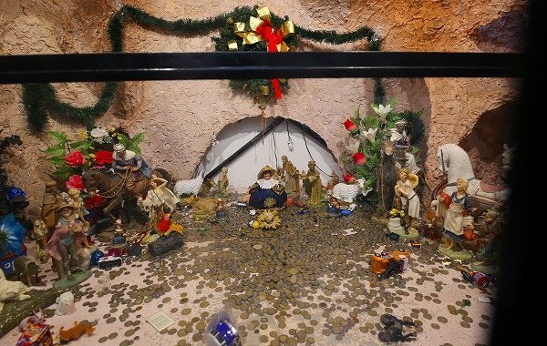
ニーニョ像に沢山の賽銭があげられていた。
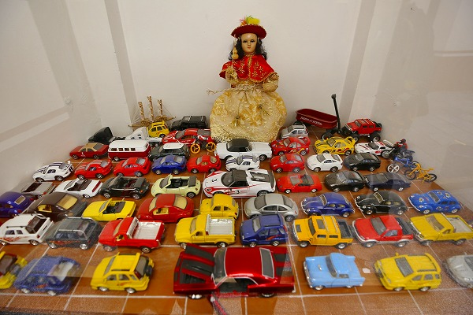
こちらは何故かミニカーが。
男の子ってミニカーが好きなんでしょっ！って事？
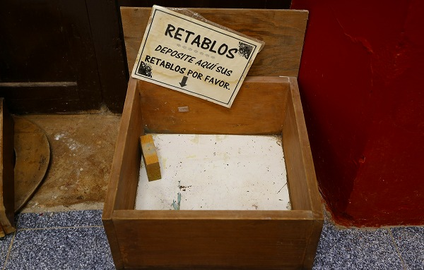
レタブロを入れる箱。
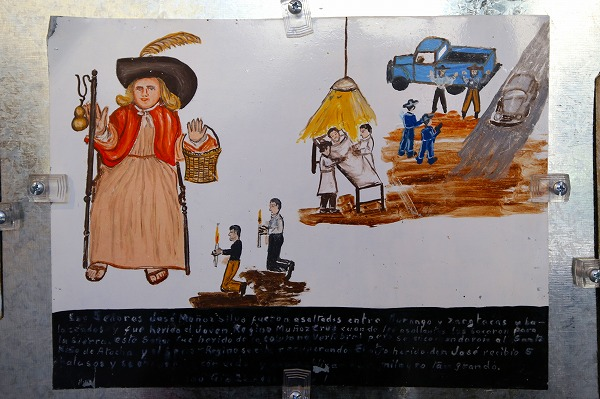
病気、強盗…本当に生きていくのに大変な社会だ。
それだけに
信仰のガチさは強烈なのかもしれない。
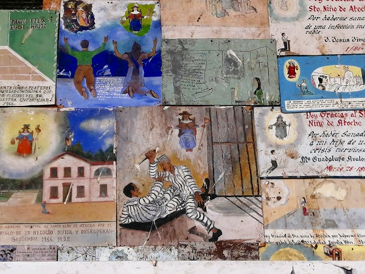
囚人同士の争い。
メキシコは刑務所内のマフィア同士の争いも凄いらしいですね。
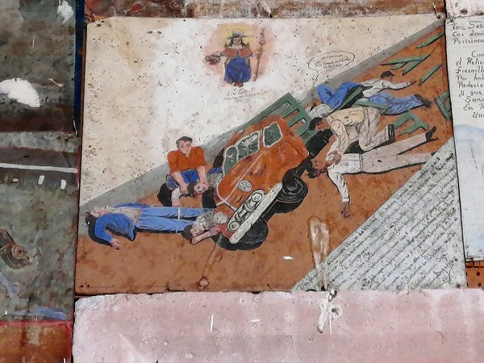
こんな悲惨な事故現場だけど僕だけ生き残りました、的なエクスヴォト。
メキシコ初日としては思いの外沢山のエクスヴォトが見れて大満足だった。
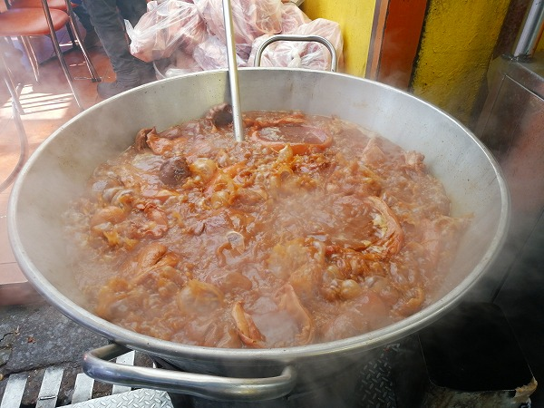
昼時だったので参道で臓物の煮込みを食した。
湯気がモウモウとしたホルモンをトルティーヤに挟んで食べる、ワイルドな料理だった。
汁ものだけに机まわりはべっちゃべちゃになったけど他の客も全然気にしてないので、まあ、いいか。

ドリンクは
ミチェラーダ。
本来はビールにライムやら唐辛子を混ぜたカクテルなのだが、ここのはそんなオシャレなものではなく、ビールに唐辛子のパウダーをぐちゃぐちゃ混ぜたマグマのようなビール。
呑んでみるとそんなに辛くはないが、見た目のインパクトだけで泥酔しそう。
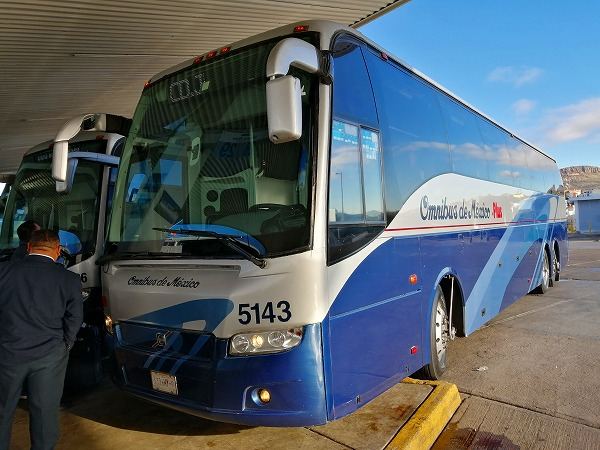
サカテカスまで戻る際に乗ったオムニバス。
ハイデッカーバスで何時間乗っても疲れない快適なシート。
大手の長距離バス会社で、この後もメキシコの都市間の移動で大変お世話になった。
さて。次はどんな光景に出会えるやら。
次の修行へVAMOS！